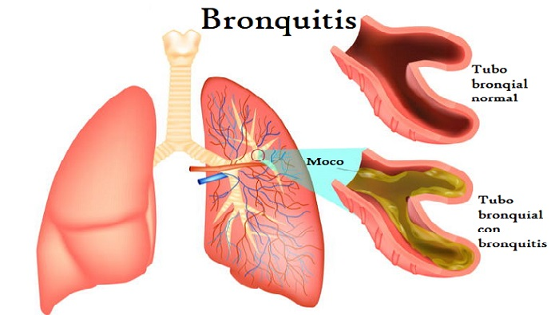

Bronquitis
Descripción
La bronquitis es una inflamación del revestimiento de los bronquios. Estos conductos transportan el aire hacia y desde los pulmones. Las personas que tienen bronquitis suelen expectorar una mucosidad espesa, que puede ser incolora. La bronquitis puede empezar de repente y ser de corta duración (aguda) o empezar gradualmente y ser de larga duración (crónica).
La bronquitis aguda, que suele aparecer por un resfriado u otra infección respiratoria, es muy frecuente. También llamada catarro de pecho, la bronquitis aguda suele mejorar en el plazo de una semana a 10 días sin efectos duraderos, aunque la tos puede persistir durante semanas.
La bronquitis crónica, una afección más grave, es una irritación o inflamación constante del revestimiento de los bronquios, a menudo debida al tabaquismo. Si tienes brotes repetidos de bronquitis, es posible que padezcas bronquitis crónica, que requiere atención médica. La bronquitis crónica es una de las afecciones incluidas en la enfermedad pulmonar obstructiva crónica (EPOC).
Causas
Por lo general, la bronquitis aguda es causada por virus, generalmente los mismos virus que causan los resfríos y la gripe (influenza). Muchos virus diferentes (todos muy contagiosos) pueden causar bronquitis aguda. Los antibióticos no matan los virus, por lo que este tipo de medicamentos no resulta útil en la mayoría de los casos de bronquitis.
Los virus se propagan principalmente de persona a persona por las gotitas generadas cuando una persona enferma tose, estornuda o habla y tú las inhalas. Los virus también pueden propagarse a través del contacto con un objeto infectado. Esto sucede si tocas algo que tiene los virus y luego te tocas los ojos, la nariz o la boca.
La causa más frecuente de la bronquitis crónica es fumar cigarrillos. La contaminación del aire y el polvo o los gases tóxicos en el medio ambiente o lugar de trabajo también pueden contribuir al desarrollo de la enfermedad.
Síntomas
Si presentas bronquitis aguda, puedes presentar síntomas de catarro, como:
- Tos
- Producción de mucosidad (esputo), que puede ser transparente, blanca, de color gris amarillento o verde (en raras ocasiones, puede presentar manchas de sangre)
- Dolor de garganta
- Dolor de cabeza leve y dolores en el cuerpo
- Fiebre ligera y escalofríos
- Fatiga
- Molestia en el pecho
- Falta de aire y sibilancias
Aunque estos síntomas suelen mejorar en una semana, es posible que la tos persista durante varias semanas.
En la bronquitis crónica, los signos y síntomas pueden ser:
- Tos
- Producción de mucosidad
- Fatiga
- Molestia en el pecho
- Falta de aire
La bronquitis crónica generalmente se define como una tos productiva que dura, al menos, tres meses, que recurre durante, por lo menos, dos años consecutivos. Si tienes bronquitis crónica, es probable que tengas períodos en los que la tos u otros síntomas empeoran. También es posible que tengas una infección aguda además de la bronquitis aguda.
Pruebas y exámenes
Su proveedor de atención médica auscultará los ruidos respiratorios en los pulmones con un estetoscopio. Su respiración puede sonar anormal o brusca.
Los exámenes pueden ser:
- Radiografía de tórax. Una radiografía torácica puede ayudar a determinar si tienes neumonía u otra enfermedad que podría explicar la tos. Esta es especialmente importante si fumas o has fumado alguna vez.
- Examen de esputo. El esputo es la mucosidad que escupes desde los pulmones al toser. Se puede analizar para determinar si tienes enfermedades que podrían tratarse con antibióticos. El esputo también puede analizarse para detectar signos de alergias.
- Prueba de la función pulmonar. Durante una prueba de la función pulmonar, soplas en un dispositivo denominado espirómetro, que mide la cantidad de aire que los pulmones pueden retener y la rapidez con la que puedes expulsar el aire de los pulmones. Esta prueba detecta signos de asma, bronquitis crónica o enfisema.
Tratamiento
La bronquitis aguda a menudo desaparece por sí sola sin tratamiento. Sin embargo, usted puede tomar medidas en casa para sentirse mejor:
- Use medicamentos de venta libre (OTC) que contengan dextrometorfano o guaifenesina, que posiblemente alivien los síntomas de la tos o aflojen la mucosidad.
- Tome mucho té o agua caliente con miel.
- Use pastillas para la garganta para disolver en la boca.
- Tenga un humidificador a mano.
- Use medicamentos inhalados, como albuterol, si son recetados. Pueden aliviar los síntomas.
Los proveedores de atención médica por lo general recetan antibióticos solo si descubren que tiene una infección bacteriana, que es más común en los niños pequeños. Si está tomando algún medicamento recetado o tiene otras enfermedades, hable con su proveedor de atención médica antes de tomar cualquier medicamento de venta libre.
En la bronquitis crónica el objetivo del tratamiento es ayudar a respirar mejor y controlar los síntomas. Su proveedor de atención médica puede hablarle sobre lo siguiente:
- Dejar de fumar
- Tomar medicamentos para ayudar a despejar las vías respiratorias o para evitar que los síntomas empeoren
- Oxigenoterapia para ayudarle a respirar mejor
- Rehabilitación pulmonar para aprender técnicas de respiración, como la respiración con los labios fruncidos, y para ayudarle a evitar que los síntomas empeoren
Expectativas
En la bronquitis aguda, excepto por la tos, los síntomas generalmente desaparecen en un período de 7 a 10 días si no tiene un trastorno pulmonar. La tos suele durar de 2 a 3 semanas.
En la bronquitis crónica, no hay cura, pero el tratamiento puede ayudar con los síntomas, retrasar el progreso de la enfermedad y mejorar su capacidad de mantenerse activo.
Imágenes de la enfermedad
